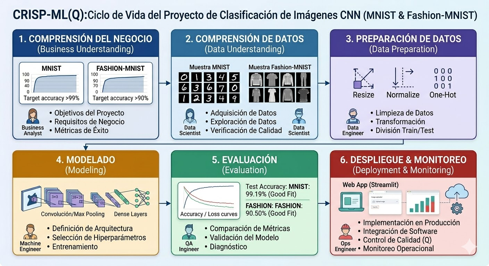
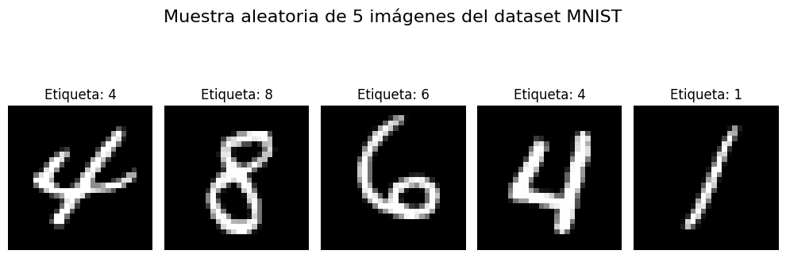
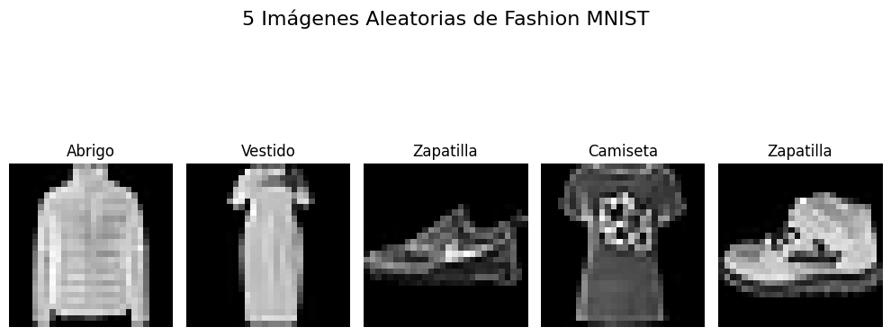
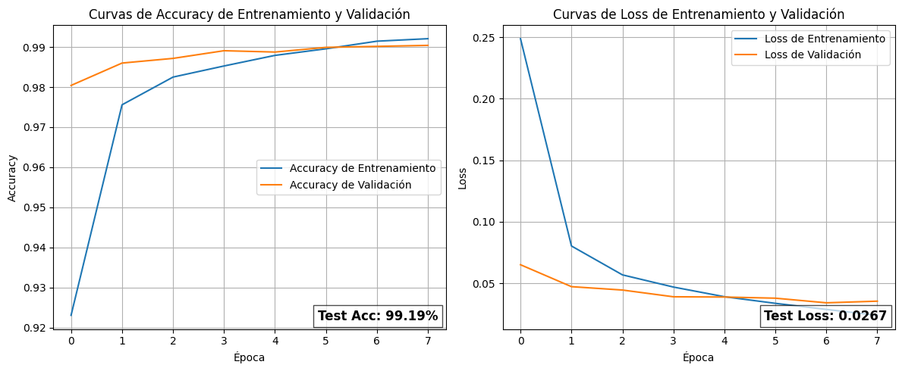
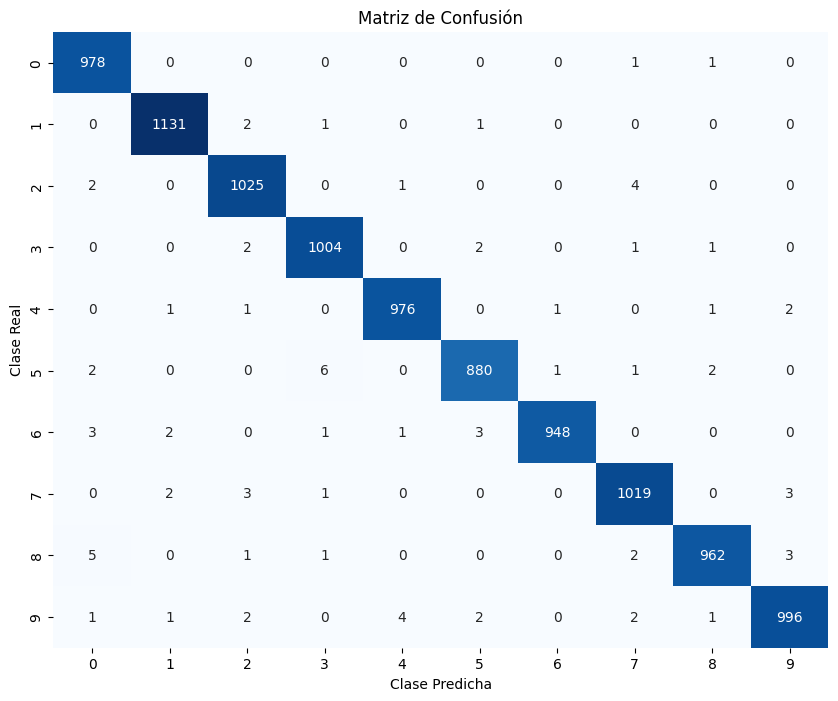
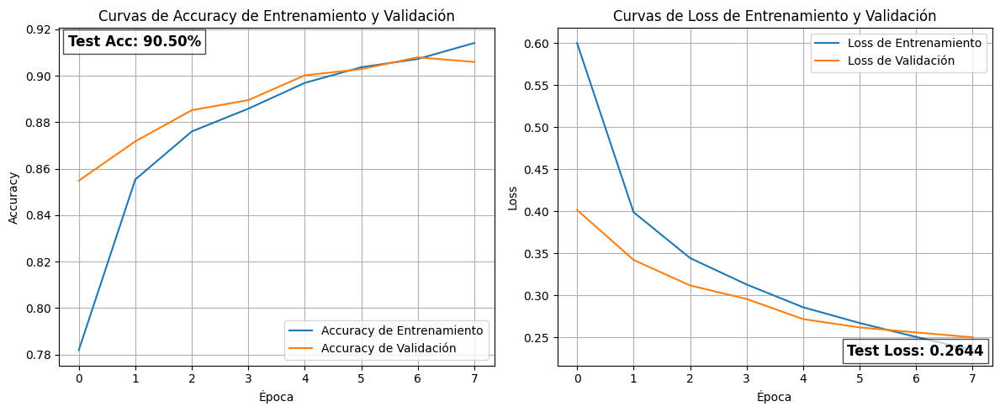
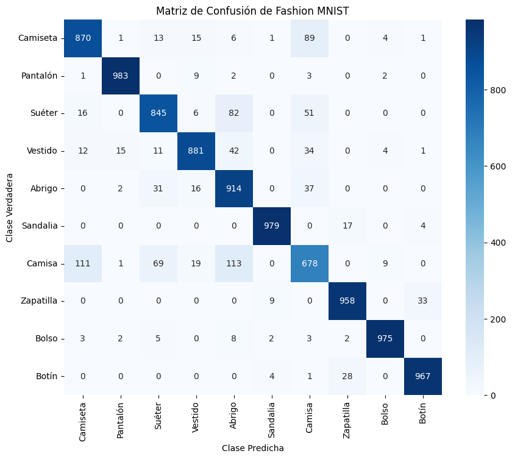
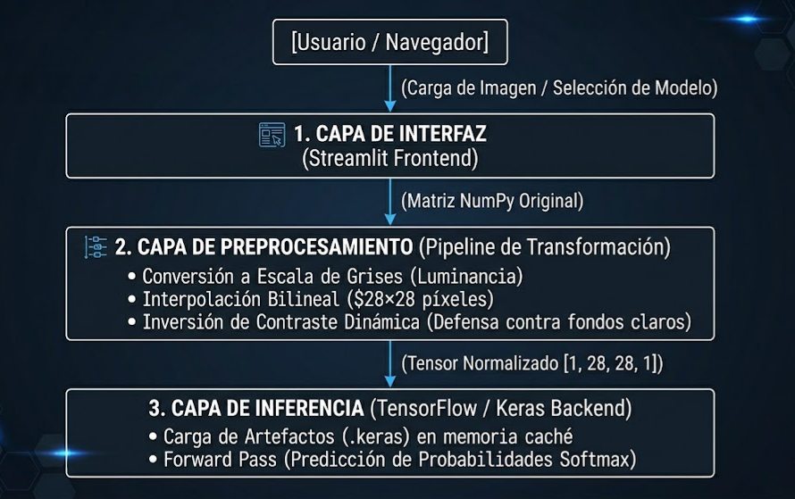

0. Estructura del Ciclo de Vida: CRISP-ML(Q)
Implementación rigurosa que añade la directiva de Aseguramiento de Calidad (Q) a cada iteración para mitigar riesgos operacionales y monitorizar el sesgo de datos en producción de forma autónoma.

Haga clic sobre el diagrama para abrir la vista interactiva con zoom táctil, botones o rueda.
Comprensión del Negocio
Caso I • Reconocimiento de Dígitos (MNIST)
El Problema: El procesamiento y digitalización manual de documentos manuscritos genera altos costos de operación, ineficiencias de flujo y fallos críticos de transcripción humana en el sector bancario.
Objetivo: Clasificador multiclase automático (0-9).
Caso II • Artículos de Moda (Fashion MNIST)
El Problema: La categorización manual de miles de artículos entrantes de proveedores en e-commerce penaliza el Time-to-Market, introduce inconsistencias de inventario en el catálogo y daña la retención de usuarios.
Objetivo: Reconocimiento automatizado en 10 categorías de ropa.
Comprensión de los Datos
Los dos conjuntos se adquieren directamente de los repositorios de desarrollo de Keras. Comparten dimensiones y homogeneidad matemática estructural estricta:


Preparación de Datos y Diseño Arquitectónico
1. Pipeline de Transformación
Reshaping Tensor: Inserción del canal explícito de luminancia requerido por TensorFlow: $(60000, 28, 28, 1)$.
Normalización MinMax: Escalamiento matemático $X_{norm} = X / 255.0$ para unificar el rango de los píxeles a flotantes de 32 bits entre $[0.0, 1.0]$. Esto previene la saturación de activaciones y acelera drásticamente la convergencia.
2. Bloques de Extracción (CNN)
Bloque Inicial: Capa Conv2D con 32 filtros ($3\times3$) y función de activación $f(x) = \max(0, x)$ (ReLU) para aislar mapas de bordes. Reducción espacial MaxPooling ($2\times2$) que condensa las dimensiones a la mitad ($14\times14$).
Bloque Profundo: Incremento a 64 filtros convolucionales ($3\times3$) para aprender patrones geométricos de alto nivel. Segundo submuestreo Max Pooling que define una salida de $7\times7$.
3. Regularización y Logits
Flatten & Densa: Desenrollado lineal del tensor tridimensional ($7\times7\times64$) en un vector compacto de $3,136$ elementos acoplado a una capa densa de 128 neuronas.
Dropout del 40%: Desconexión estocástica del $40\%$ de los nodos en cada iteración de entrenamiento. Rompe la co-adaptación de weights previniendo el Overfitting de manera drástica.
Softmax: Logits mapeados en una distribución normalizada que suma exactamente $1.0$ ($100\%$).
Evaluación Analítica y Diagnóstico Estadístico
Auditoría Caso MNIST (Dígitos)
Test Acc: 99.19%El paralelismo decreciente de las curvas de costo (Loss final de $0.0267$) ratifica un **Ajuste Óptimo (Good Fit)**. Las escasas confusiones se concentran de forma marginal en trazos manuales ambiguos entre los pares geométricos $(3, 8)$ y $(4, 9)$.


Auditoría Caso Fashion MNIST (Moda)
Test Acc: 90.50%Supera el requerimiento original del negocio ($90.0\%$). Consolidó un costo de error de $0.2644$. El mapa calórico revela un comportamiento óptimo y perfecto en artículos con siluetas muy distintivas como Pantalones ($983$ aciertos) y Bolsos ($975$ aciertos).


Despliegue e Infraestructura Web de Producción
Transición directa de los artefactos de aprendizaje serializados (.keras) desde Google Colab hacia una arquitectura en la nube servida por **Streamlit Community Cloud** mapeada al repositorio central.
- 1. Capa Interfaz: Menú dinámico lateral en Streamlit y componente receptor
st.file_uploaderpara imágenes PNG y JPEG. - 2. Capa Preprocesamiento: Conversión RGB a escala de grises mediante fórmula de luminancia ITU-R $0.299R+0.587G+0.114B$ e interpolación bilineal fija a $28\times28$ píxeles.
- Defensa de Producción: Inversión matemática automática matricial lineal ($X_{final} = 255 - X_{original}$) si el usuario ingresa fondos claros, neutralizando fallos catastróficos del modelo.
- 3. Capa Inferencia: Carga de pesos optimizada en caché persistente (
@st.cache_resource) eliminando cuellos de botella de E/S de disco.

Monitoreo y Protocolos de Contingencia
| Nivel de Control | Métrica Monitoreada | Cota de Infracción | Acción Automatizada de Contingencia |
|---|---|---|---|
| Infraestructura | Latencia de Inferencia | > 15 ms / petición | Optimización de caché intermedia y reescalado de contenedores en la nube. |
| Servidor Web | Tasa Error HTTP | > 1% respuestas 5xx | Disparo e instanciación de script de Healthcheck para reinicio de servicio. |
| Calidad de Datos | Data Drift (Sesgo) | Índice $PSI > 0.25$ | Test de Kolmogorov-Smirnov sobre distribuciones de brillo; alerta al equipo de Datos. |
| Modelo ML | Degradación Accuracy | < 98% (MNIST) / < 89% (Fashion) | Llamada y ejecución inmediata del pipeline automatizado de reentrenamiento. |
Data Logging & Reentrenamiento Semestral
Las muestras que disparan el umbral de baja confianza de Softmax ($< 80\%$) se capturan de forma anonimizada. Un orquestador automatizado toma el dataset histórico, indexa el lote de producción y reajusta los pesos de la CNN durante 8 épocas generando un artefacto versionado bajo nomenclatura semántica estricta.
Protocolo de Contingencia (Rollback Instantáneo)
Si un nuevo binario inyectado colapsa los tiempos de respuesta o altera las tasas lógicas HTTP, los controladores de integración continua (CI/CD) desvían los punteros de inferencia del servidor Streamlit a la versión estable anterior (v1.0.keras) en un intervalo inferior a 60 segundos.